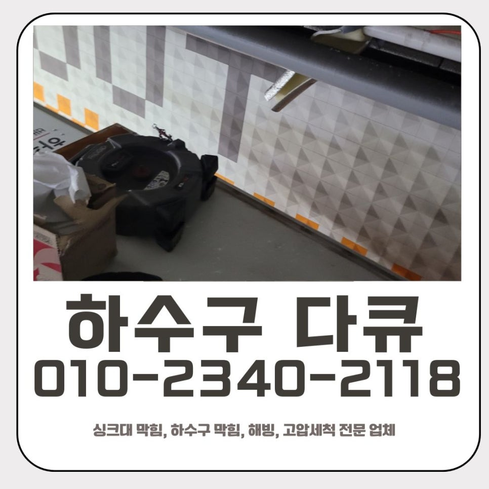
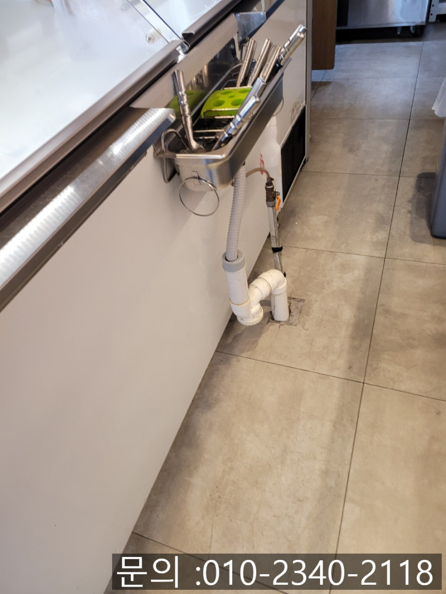
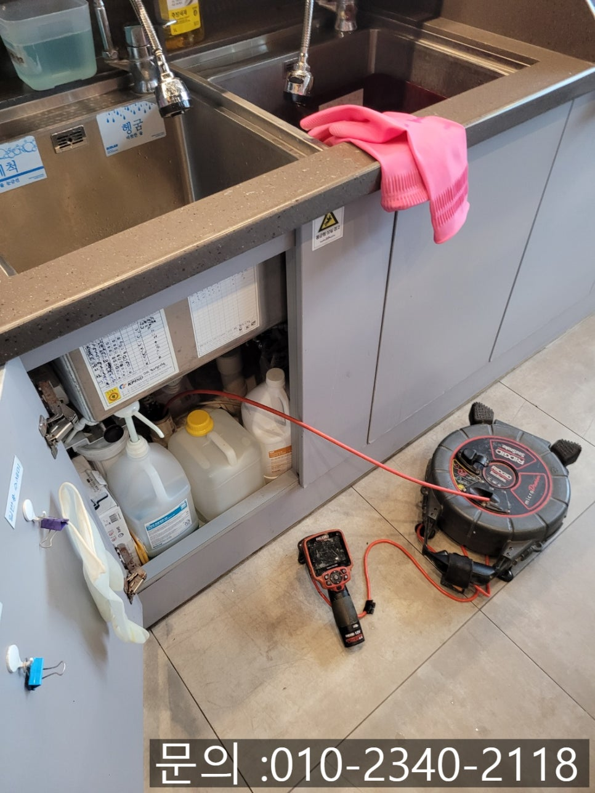
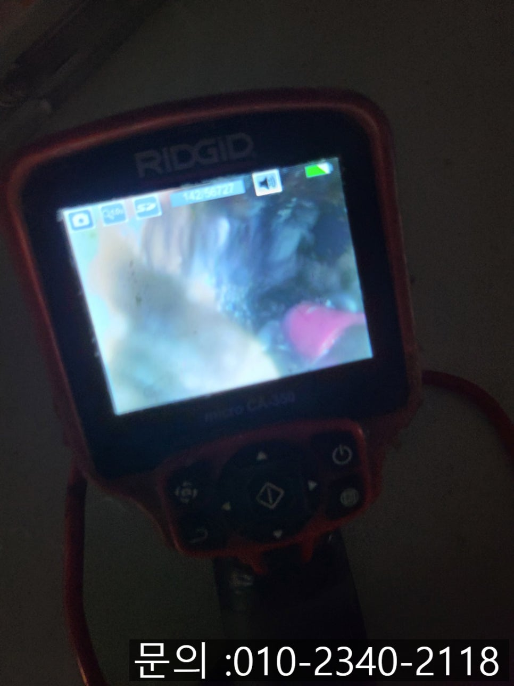
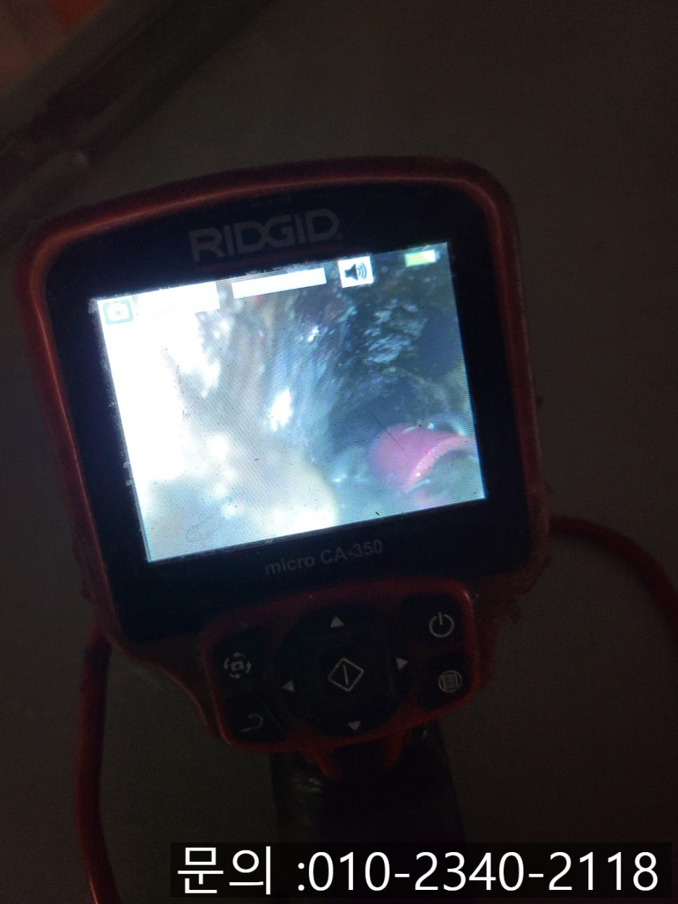
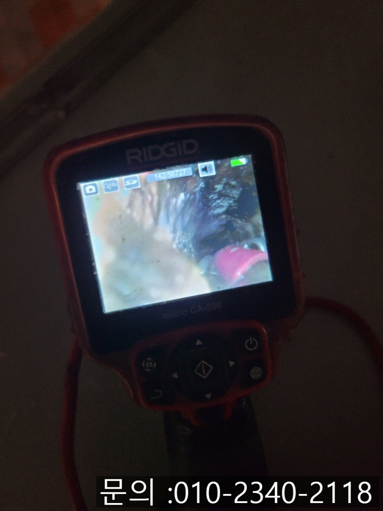
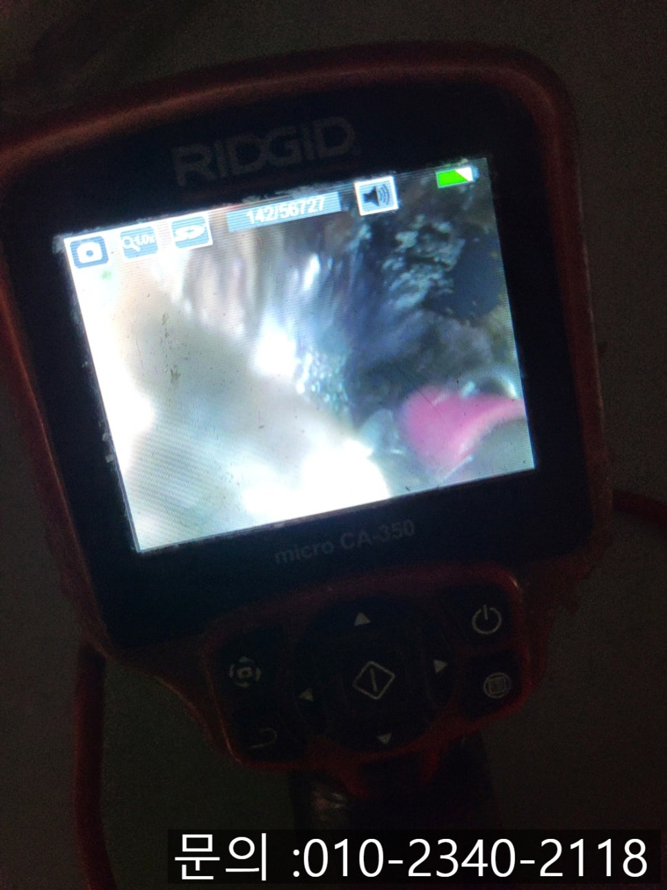

🏠 서현동 싱크대 막힘 분당 이매동 하수구 역류 해결 전문 업체
용인 싱크대막힘 전문 시공 후기

📋 작업 개요
- 위치: 용인
- 서비스 유형: 싱크대막힘, 하수구막힘, 배관막힘, 누수수리, 역류해결, 뚫는업체, 배관청소, 고압세척
- 작업 일시: 2025. 7. 25. 9:30
- 업체명: 하수구수사대 (010-5615-2118)
🔍 문제 상황
안녕하세요.
분당 이매동 하수구 역류 해결 전문 업체 하수구 다큐멘터리입니다.
요즘처럼 무더운 날씨엔 시원한 아이스크림을 찾는 손님이 많은데요. 오늘 소개해 드릴 현장이 바로 아이스크림 가게에서 발생했던 서현동 싱크대 막힘 사례입니다.

🔎 원인 분석
💡 전문가 진단: 정밀 진단 장비를 사용하여 슬러지의 고착 여부를 판명하고 타격/세척 작업을 실시했습니다.
손님 응대 중에 싱크대가 막혀 물이 역류하는 상황으로 불편함이 이만저만이 아니라고 하시면서 급하게 방문을 요청하셨어요. 고객님과 시간 약속을 하고 신속하게 장비를 챙겨 현장을 방문 드리게 되었습니다.
서현동 싱크대 막힘 현장에 도착하여 살펴보니, 싱크대가 연결되어 두 대가 설치되어 있었는데 한쪽에 물을 받아서 흘려보내면 반대쪽 싱크대에서 역류가 일어나는 문제가 반복되고 있었어요.
겉으로 보기에 정확한 원인을 알 수 없었기 때문에 배관 상태를 점검하기 위해 싱크대 하 부장으로 배관 내시경 장비를 진입시켜 내부를 살펴보았어요.
점검 결과, 기름기와 찌꺼기가 엉켜 슬러지처럼 가득 쌓여있었어요. 아이스크림을 다루는 작업 특성상 유제품류에서 나오는 기름기가 상당히 많이 쌓이면서 물 흐름이 원활하지 못한 상황으로 보였어요. 아이스크림 제조에 쓰이는 유제품과 당 성분이 배관 내부에 잘 달라붙고, 시간이 지나면서 굳어지게 되어 싱크대 배관 막힘으로 이어지게 된 것이었어요.

🔧 작업 과정
고객님께 이 상황을 자세하게 안내해 드리고, 서현동 싱크대 막힘을 뚫기 위해서 플렉스 샤프트 장비를 투입하기로 결정하였어요.
작업할 수 있는 공간이 마땅치 않았기 때문에 노출되어 있는 배관을 타공하여 샤프트 장비를 진입시켜 청소 작업을 시작하였어요.
샤프트 장비는 끝부분에 갈퀴 모양의 노즐이 장착되어 있어, 전동 드릴의 회전 속도에 따라 회전 강도를 조절할 수 있어요. 회전 동작을 통해 싱크대 배관 내부에 끈적하게 부착되어 있는 기름 슬러지 및 이물질을 마치 믹서기처럼 분쇄하고 제거하면서 깨끗하게 청소해 주게 됩니다.
배관 내시경을 이용해 내부의 오염도를 꼼꼼히 확인하면서 샤프트 장비를 이용하여 여러 차례 회전하면서 갈아내는 작업을 반복해 주었어요. 배관 벽면에 눌어붙어 있던 유제품 찌꺼기와 슬러지들이 점차 제거되면서 막혀있던 구간이 서서히 물길이 트이기 시작했어요.
반복적인 회전 세척 끝에 결국 완전히 뚫어내는데 성공하였고, 물이 시원하게 잘 빠져나가는 것을 확인할 수 있었어요. 타공했던 배관은 누수가 발생하지 않도록 방수 테이프와 실리콘을 이용하여 꼼꼼하게 붙여주었어요.


✅ 작업 완료
슬러지와 찌꺼기를 깔끔하게 제거하고, 배관 내부를 다시 한번 확인하고 배관 내시경으로 청소가 제대로 되었는지 최종 점검까지 마쳤어요. 고객님께서도 처음이라 당황하셨는데, 빠르고 깔끔하게 해결돼서 너무 속이 시원하다고 웃으면서 말씀해 주셨어요.
음식점이나 디저트 매장처럼 음식물 찌꺼기와 유분, 당분이 많은 환경이라면 자주 점검하고 주기적으로 배관 청소를 하시는 것을 추천드립니다. 분당 이매동 하수구 역류 해결 전문 업체인 하수구 다큐멘터리의 도움을 받아 빠르게 해결해 보시길 바랄게요.




⚠️ 베란다 누수 및 방수 관리 방법
- ✅ 비가 많이 올 때 창틀 주변이나 아래층 천장에 얼룩이 생기는지 정기적으로 확인해 보세요.
- ✅ 우수관 주변 실리콘 마감이 들뜨거나 깨진 틈새가 있는지 손상 여부를 수시로 체크하세요.
- ✅ 베란다 바닥 타일의 줄눈(메지)이 소실되면 그 틈으로 물이 침투하여 누수가 유발됩니다.
- ✅ 누수 의심 증상 발견 시 방치하면 아래층 손실이 커지므로 즉시 전문가의 진단을 받으십시오.
💡 핵심 정리
- 확실한 장비 작업(내시경 점검 및 샤프트 스케일링)으로 원인을 뿌리 뽑습니다.
- 작업 후 1년 이내에 동일한 부위 재발 시 100% 무상 A/S 서비스를 보장합니다.
- 서울 · 경기 · 인천 전 지역에 24시간 언제든 긴급 출동할 수 있도록 항시 대기 중입니다.
❓ 자주 묻는 질문 (FAQ)
🚨 용인 싱크대막힘 문제로 고민이신가요?
정확한 원인 진단과 확실한 시공으로 재발 없는 해결을 약속드립니다.
24시간 긴급 출동 | 서울 · 경기 · 인천 전지역 | 1년 내 재발 시 무상 A/S